Skrub DataOps
Jérôme Dockès
probabl

Skrub
Machine learning on tabular data


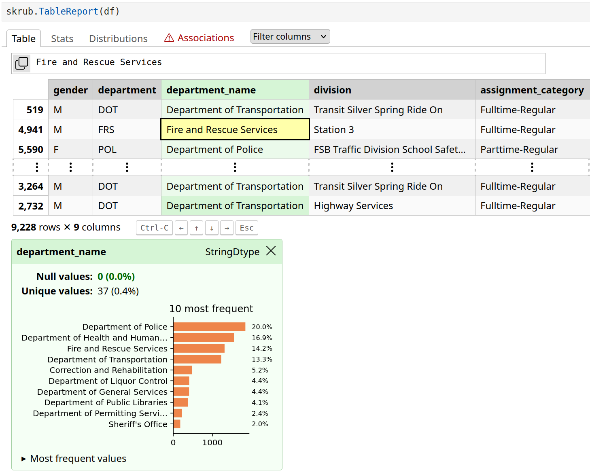
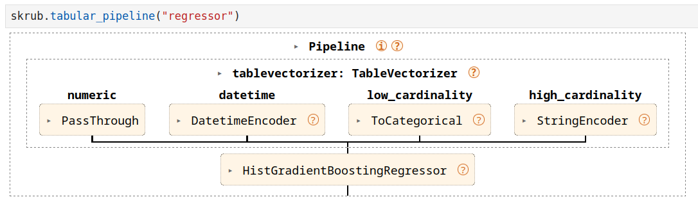
- skrub-data.org
- This talk: the skrub DataOps framework.
Textbook ML
\(X \in \mathbb{R}^{n \times p},\ y \in \mathbb{R}^n\)
\(\hat{y} = f_{\hat{\theta}}(X)\)
estimator = TabICLRegressor()
cross_validate(estimator, X, y)
estimator.fit(X_train, y_train)
estimator.predict(X_new)Data-Science Practice
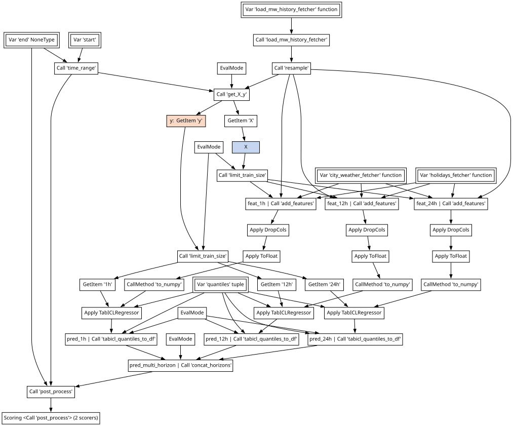
Textbook ML
\(X \in \mathbb{R}^{n \times p},\ y \in \mathbb{R}^n\)
\(\hat{y} = f_{\hat{\theta}}(X)\)
estimator = TabICLRegressor()
cross_validate(estimator, X, y)
estimator.fit(X_train, y_train)
estimator.predict(X_new)Data-Science Practice
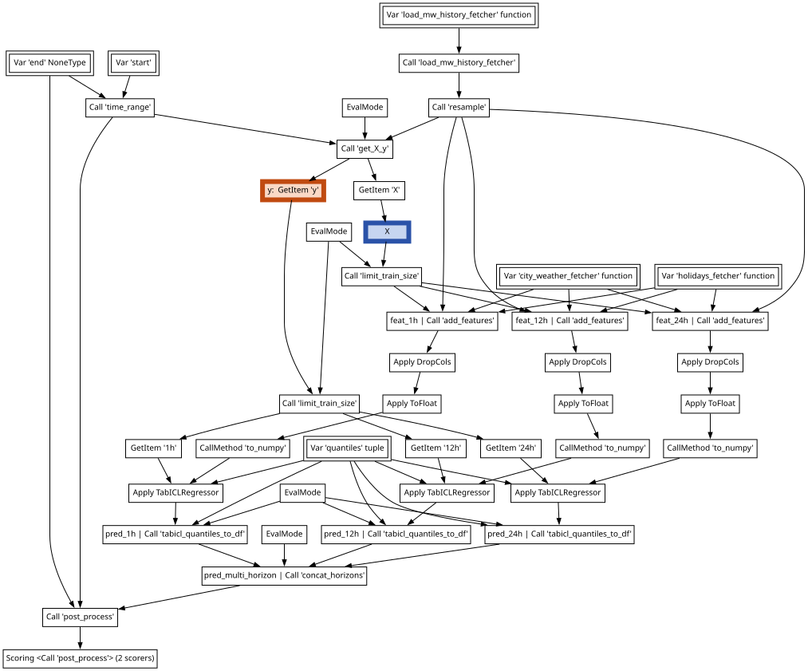
Textbook ML
\(X \in \mathbb{R}^{n \times p},\ y \in \mathbb{R}^n\)
\(\hat{y} = f_{\hat{\theta}}(X)\)
estimator = TabICLRegressor()
cross_validate(estimator, X, y)
estimator.fit(X_train, y_train)
estimator.predict(X_new)Data-Science Practice
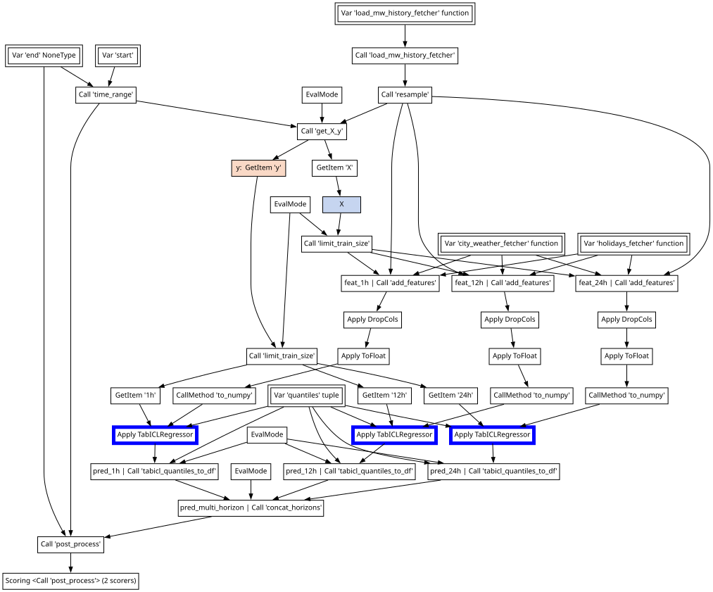
Data wrangling: filtering, resampling, aggregations, joins, …
- Cross-validate without data leaks.
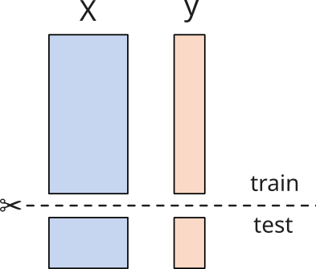
Data wrangling: filtering, resampling, aggregations, joins, …
- Tune choices with validation scores.
- Hyperparameters
- Which encoding for categories, text, dates, …
- How to aggregate, what external information to join
- Which lags, rolling windows
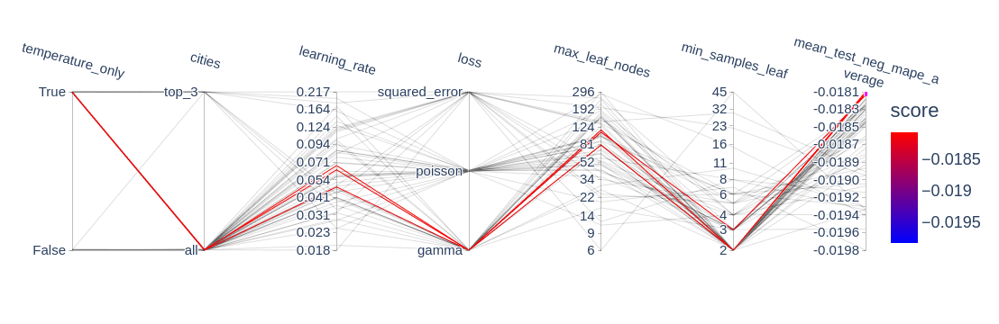
Data wrangling: filtering, resampling, aggregations, joins, …
- fit to training data and store important state.
- Replay on new inputs.
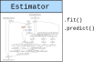
How to use DataOps
Basic example
Declare the pipeline
Cross-validate
Make a “learner” (object with fit() & predict())
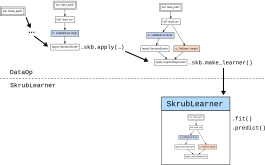
.skb.apply()
Rolling your own ColumnTransformer or TableVectorizer:
from skrub import selectors as s
X = skrub.var("X")
numeric = X.skb.select(s.numeric()).skb.apply(skrub.SquashingScaler())
string = X.skb.select(s.string()).skb.apply(skrub.StringEncoder())
datetime = X.skb.select(s.any_date()).skb.apply(skrub.DatetimeEncoder())
vectorized = numeric.skb.concat([string, datetime], axis=1)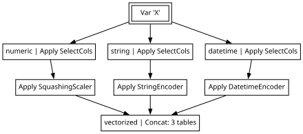
Tuning choices: scikit-learn
pipeline = Pipeline(
[
("scaler", StandardScaler()),
("classifier", LogisticRegression()),
]
)
param_distributions = [
{
"scaler": [StandardScaler()],
"classifier": [LogisticRegression()],
"classifier__C": stats.loguniform(0.01, 10.0),
},
{
"scaler": [SquashingScaler()],
"scaler__quantile_range": [(25.0, 75.0), (10.0, 90.0)],
"classifier": [LogisticRegression()],
"classifier__C": stats.loguniform(0.01, 10.0),
},
{
"scaler": [StandardScaler()],
"classifier": [RidgeClassifier()],
"classifier__alpha": stats.loguniform(0.02, 20.0),
},
{
"scaler": [SquashingScaler()],
"scaler__quantile_range": [(25.0, 75.0), (10.0, 90.0)],
"classifier": [RidgeClassifier()],
"classifier__alpha": stats.loguniform(0.02, 20.0),
},
]
search = RandomizedSearchCV(pipeline, param_distributions).fit(X, y)- Ranges declared outside of the pipeline
- Can only tune estimator parameters, not other choices
Tuning choices: skrub
- Replace any value with a choice:
X = data.drop(columns="target", errors="ignore").skb.mark_as_X()
y = data["target"].skb.mark_as_y()
pred = X.skb.apply(StandardScaler()).skb.apply(
- LogisticRegression(C=1.0),
+ LogisticRegression(C=skrub.choose_float(0.1, 10.0, log=True)),
y=y)- Use grid search or randomized search (possibly backed by Optuna).
-learner = pred.skb.make_learner().fit({...})
+learner = pred.skb.make_randomized_search().fit({...})Example: electricity load forecasting

skrub DataOps
fit() & predict(), cross-validation, tuning for complex predictive pipelines.
- this presentation & notebooks
- docs on skrub-data.org
- skrub discord server
jerome@dockes.org
orders
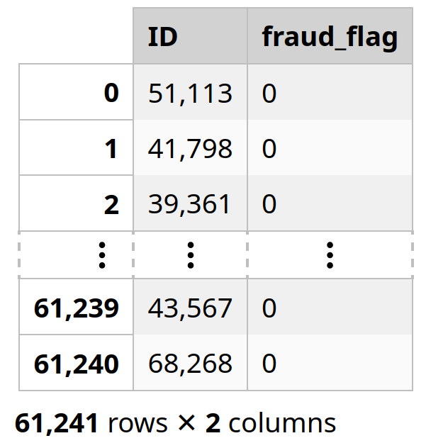
items
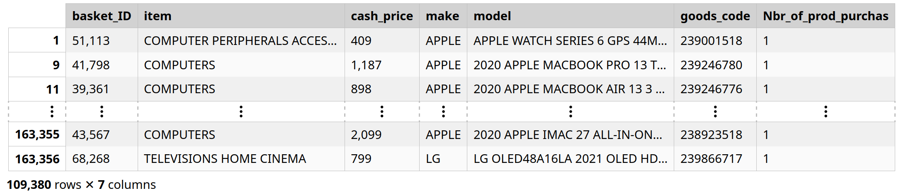
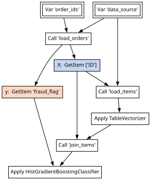